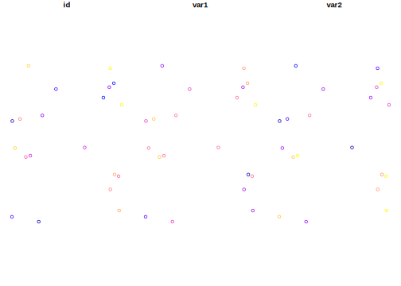
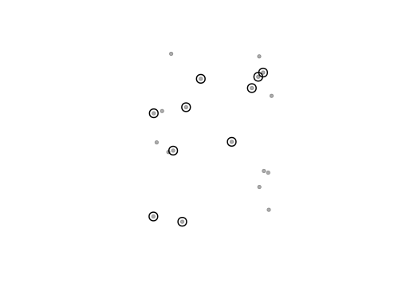
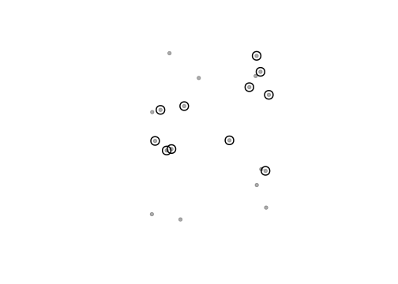
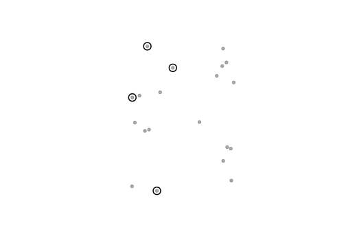
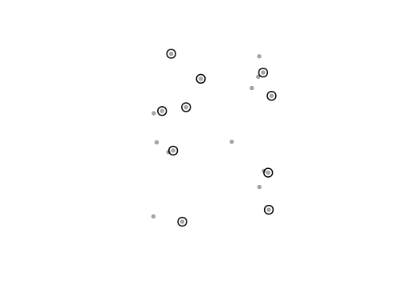
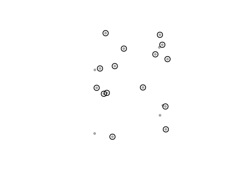
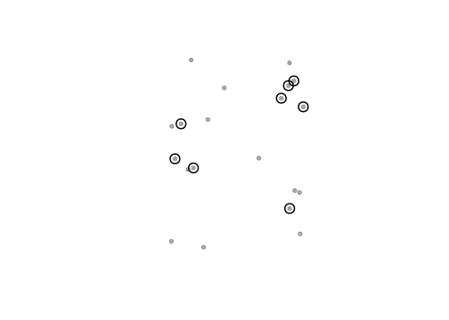

6.1 Spatial objects attributes manipulations
Now that we know how to import and transform different classes of spatial objects in R, we can start manipulating their attributes. In this post, we will make a brief overview of some useful basic manipulations that we can perform on spatial object attributes. By no means are those examples exhaustive, but they constitute common manipulations that are made with spatial objects.
6.1.1 Vector objects
For this part, we discuss how to manipulate attributes of objects from the sf
package. sf objects have the advantage of being structured like data frames,
making their manipulations more intuitive than for objects of class sp. However,
if the structure of sp objects is well understood, then the same principles
will mostly apply.
Let’s begin by creating an sf points object as seen in the post on
Spatial objects in R
mydata <- data.frame(
id = 1:20,
long = -82 + 2 * runif(20),
lat = 42 + 2 * runif(20),
var1 = rnorm(20),
var2 = 10 * runif(20)
)
library(sf)
spatData <- st_as_sf(mydata,
coords = c("long", "lat"),
crs = "+proj=longlat +ellps=WGS84 +datum=WGS84 +no_defs +towgs84=0,0,0"
)
knitr::kable(head(spatData))| id | var1 | var2 | geometry |
|---|---|---|---|
| 1 | -0.2656208 | 4.759596 | POINT (-81.49872 42.14625) |
| 2 | -0.4473916 | 1.959090 | POINT (-81.90416 43.27473) |
| 3 | 0.5489937 | 9.644724 | POINT (-80.34889 43.69822) |
| 4 | 0.0284773 | 4.680517 | POINT (-80.50904 43.53668) |
| 5 | -0.0961527 | 4.989629 | POINT (-81.23522 43.63335) |
| 6 | -1.1786894 | 8.523099 | POINT (-81.90933 42.20106) |

6.1.2 Adding and removing attributes
The object we currently have has to variables var1 and var2. Additional
attributes can quickly be added to the attributes table of our objects.
spatData$var3 <- runif(20)
spatData$var4 <- spatData$var1 * spatData$var2
knitr::kable(head(spatData))| id | var1 | var2 | geometry | var3 | var4 |
|---|---|---|---|---|---|
| 1 | -0.2656208 | 4.759596 | POINT (-81.49872 42.14625) | 0.8109781 | -1.2642476 |
| 2 | -0.4473916 | 1.959090 | POINT (-81.90416 43.27473) | 0.7204655 | -0.8764803 |
| 3 | 0.5489937 | 9.644724 | POINT (-80.34889 43.69822) | 0.5373404 | 5.2948924 |
| 4 | 0.0284773 | 4.680517 | POINT (-80.50904 43.53668) | 0.8825313 | 0.1332883 |
| 5 | -0.0961527 | 4.989629 | POINT (-81.23522 43.63335) | 0.5776756 | -0.4797662 |
| 6 | -1.1786894 | 8.523099 | POINT (-81.90933 42.20106) | 0.4965744 | -10.0460866 |
Similarly, unwanted columns can be removed.
| id | var1 | var2 | geometry |
|---|---|---|---|
| 1 | -0.2656208 | 4.759596 | POINT (-81.49872 42.14625) |
| 2 | -0.4473916 | 1.959090 | POINT (-81.90416 43.27473) |
| 3 | 0.5489937 | 9.644724 | POINT (-80.34889 43.69822) |
| 4 | 0.0284773 | 4.680517 | POINT (-80.50904 43.53668) |
| 5 | -0.0961527 | 4.989629 | POINT (-81.23522 43.63335) |
| 6 | -1.1786894 | 8.523099 | POINT (-81.90933 42.20106) |
However, if you have a very big dataset, you may want to remove columns without having to write all column names manually! You could do this based on the names of the columns you wish to remove or, alternatively, on the names of the attributes you wish to keep.
# Remove last 20 attributes
for (i in 1:5) spatData <- cbind(spatData, varSup = runif(20))
knitr::kable(head(spatData))| id | var1 | var2 | varSup | varSup.1 | varSup.2 | varSup.3 | varSup.4 | geometry |
|---|---|---|---|---|---|---|---|---|
| 1 | -0.2656208 | 4.759596 | 0.9534384 | 0.6138915 | 0.1015347 | 0.5420090 | 0.6238369 | POINT (-81.49872 42.14625) |
| 2 | -0.4473916 | 1.959090 | 0.8681574 | 0.4294649 | 0.4743601 | 0.2269843 | 0.8081788 | POINT (-81.90416 43.27473) |
| 3 | 0.5489937 | 9.644724 | 0.1361151 | 0.7992288 | 0.8391657 | 0.5569911 | 0.6493939 | POINT (-80.34889 43.69822) |
| 4 | 0.0284773 | 4.680517 | 0.4525283 | 0.4184388 | 0.7522447 | 0.8993869 | 0.2867850 | POINT (-80.50904 43.53668) |
| 5 | -0.0961527 | 4.989629 | 0.3083761 | 0.5784799 | 0.4390189 | 0.4630437 | 0.9403453 | POINT (-81.23522 43.63335) |
| 6 | -1.1786894 | 8.523099 | 0.4567769 | 0.5681770 | 0.2781423 | 0.2046933 | 0.9574098 | POINT (-81.90933 42.20106) |
rem <- colnames(spatData)[4:8]
spatData <- spatData[, !colnames(spatData) %in% rem]
knitr::kable(head(spatData))| id | var1 | var2 | geometry |
|---|---|---|---|
| 1 | -0.2656208 | 4.759596 | POINT (-81.49872 42.14625) |
| 2 | -0.4473916 | 1.959090 | POINT (-81.90416 43.27473) |
| 3 | 0.5489937 | 9.644724 | POINT (-80.34889 43.69822) |
| 4 | 0.0284773 | 4.680517 | POINT (-80.50904 43.53668) |
| 5 | -0.0961527 | 4.989629 | POINT (-81.23522 43.63335) |
| 6 | -1.1786894 | 8.523099 | POINT (-81.90933 42.20106) |
# Keep id, var1 and var2
for (i in 1:5) spatData <- cbind(spatData, varSup = runif(20))
knitr::kable(head(spatData))| id | var1 | var2 | varSup | varSup.1 | varSup.2 | varSup.3 | varSup.4 | geometry |
|---|---|---|---|---|---|---|---|---|
| 1 | -0.2656208 | 4.759596 | 0.7449004 | 0.0452048 | 0.8988959 | 0.0168985 | 0.2944407 | POINT (-81.49872 42.14625) |
| 2 | -0.4473916 | 1.959090 | 0.0900476 | 0.8871131 | 0.1598538 | 0.2328176 | 0.4268325 | POINT (-81.90416 43.27473) |
| 3 | 0.5489937 | 9.644724 | 0.5445201 | 0.2484915 | 0.7909352 | 0.3587498 | 0.4109497 | POINT (-80.34889 43.69822) |
| 4 | 0.0284773 | 4.680517 | 0.6810730 | 0.7645665 | 0.9036288 | 0.4662961 | 0.3269100 | POINT (-80.50904 43.53668) |
| 5 | -0.0961527 | 4.989629 | 0.4125643 | 0.9801848 | 0.2356249 | 0.9420042 | 0.5674170 | POINT (-81.23522 43.63335) |
| 6 | -1.1786894 | 8.523099 | 0.8083331 | 0.2663551 | 0.8119234 | 0.2049022 | 0.4381835 | POINT (-81.90933 42.20106) |
| id | var1 | var2 | geometry |
|---|---|---|---|
| 1 | -0.2656208 | 4.759596 | POINT (-81.49872 42.14625) |
| 2 | -0.4473916 | 1.959090 | POINT (-81.90416 43.27473) |
| 3 | 0.5489937 | 9.644724 | POINT (-80.34889 43.69822) |
| 4 | 0.0284773 | 4.680517 | POINT (-80.50904 43.53668) |
| 5 | -0.0961527 | 4.989629 | POINT (-81.23522 43.63335) |
| 6 | -1.1786894 | 8.523099 | POINT (-81.90933 42.20106) |
6.1.3 Subsets
You may also wish to subset your object based on certain attribute values. We will begin by adding some factorial attributes to our spatial object to discuss this in more detail.
spatData$fact1 <- paste0("a", 1:2) # Create factor with 2 levels
spatData$fact2 <- paste0("b", 1:5) # Create factor with 5 levels
knitr::kable(head(spatData))| id | var1 | var2 | geometry | fact1 | fact2 |
|---|---|---|---|---|---|
| 1 | -0.2656208 | 4.759596 | POINT (-81.49872 42.14625) | a1 | b1 |
| 2 | -0.4473916 | 1.959090 | POINT (-81.90416 43.27473) | a2 | b2 |
| 3 | 0.5489937 | 9.644724 | POINT (-80.34889 43.69822) | a1 | b3 |
| 4 | 0.0284773 | 4.680517 | POINT (-80.50904 43.53668) | a2 | b4 |
| 5 | -0.0961527 | 4.989629 | POINT (-81.23522 43.63335) | a1 | b5 |
| 6 | -1.1786894 | 8.523099 | POINT (-81.90933 42.20106) | a2 | b1 |
The most simple way to subset an attributes table would be to manually select the rows that we wish to view. In this instance, let’s say we only wish to use the first 10 rows of our data.
selectID <- 1:10
plot(spatData$geometry, col = "#00000055", pch = 20, cex = 1.25, main = "")
plot(spatData$geometry[selectID], col = "#000000", add = TRUE, pch = 1, cex = 2, lwd = 2)
However, subsets based on certain criteria, e.g. all values greater to or equal to 0, can be much more efficient to create subsets. These are conditional statements and there is a vast body of material available discussing them, so we will only present a few examples and invite you to consult other resources like StackOverflow for more specific questions.
# Select all values for var1 greater to or equal to 0
selectID <- spatData$var1 >= 0
plot(spatData$geometry, col = "#00000055", pch = 20, cex = 1.25, main = "")
plot(spatData$geometry[selectID], col = "#000000", add = T, pch = 1, cex = 2, lwd = 2)
# var1 smaller than 0 and var2 higher than 5
selectID <- spatData$var1 < 0 & spatData$var2 < 5
plot(spatData$geometry, col = "#00000055", pch = 20, cex = 1.25, main = "")
plot(spatData$geometry[selectID], col = "#000000", add = T, pch = 1, cex = 2, lwd = 2)
# fact1 equal to a1
selectID <- spatData$fact1 == "a1"
plot(spatData$geometry, col = "#00000055", pch = 20, cex = 1.25, main = "")
plot(spatData$geometry[selectID], col = "#000000", add = T, pch = 1, cex = 2, lwd = 2)
# fact1 equal to a1 or var1 greater than 0
selectID <- spatData$fact1 == "a1" | spatData$var1 > 0
plot(spatData$geometry, col = "#00000055", pch = 20, cex = 1.25, main = "")
plot(spatData$geometry[selectID], col = "#000000", add = T, pch = 1, cex = 2, lwd = 2)
# fact2 equal to b3 or b4
selectID <- spatData$fact2 %in% c("b3", "b4")
plot(spatData$geometry, col = "#00000055", pch = 20, cex = 1.25, main = "")
plot(spatData$geometry[selectID], col = "#000000", add = T, pch = 1, cex = 2, lwd = 2)
6.1.4 Join
Joining tables based on their shared id is another common manipulation. This can
be quickly accomplished using the left_join function from the dplyr package.
# Create data.frame with id field similar to that in the spatial object
joinData <- data.frame(id = seq(1, 20, by = 2),
var3 = rnorm(10))
# Join with attributes table of spatial object
library(dplyr)#R>
#R> Attaching package: 'dplyr'#R> The following objects are masked from 'package:raster':
#R>
#R> intersect, select, union#R> The following objects are masked from 'package:stats':
#R>
#R> filter, lag#R> The following objects are masked from 'package:base':
#R>
#R> intersect, setdiff, setequal, union#R> Joining with `by = join_by(id)`| id | var1 | var2 | fact1 | fact2 | var3 | geometry |
|---|---|---|---|---|---|---|
| 1 | -0.2656208 | 4.759596 | a1 | b1 | -0.8490988 | POINT (-81.49872 42.14625) |
| 2 | -0.4473916 | 1.959090 | a2 | b2 | NA | POINT (-81.90416 43.27473) |
| 3 | 0.5489937 | 9.644724 | a1 | b3 | -1.0932612 | POINT (-80.34889 43.69822) |
| 4 | 0.0284773 | 4.680517 | a2 | b4 | NA | POINT (-80.50904 43.53668) |
| 5 | -0.0961527 | 4.989629 | a1 | b5 | -1.0502298 | POINT (-81.23522 43.63335) |
| 6 | -1.1786894 | 8.523099 | a2 | b1 | NA | POINT (-81.90933 42.20106) |